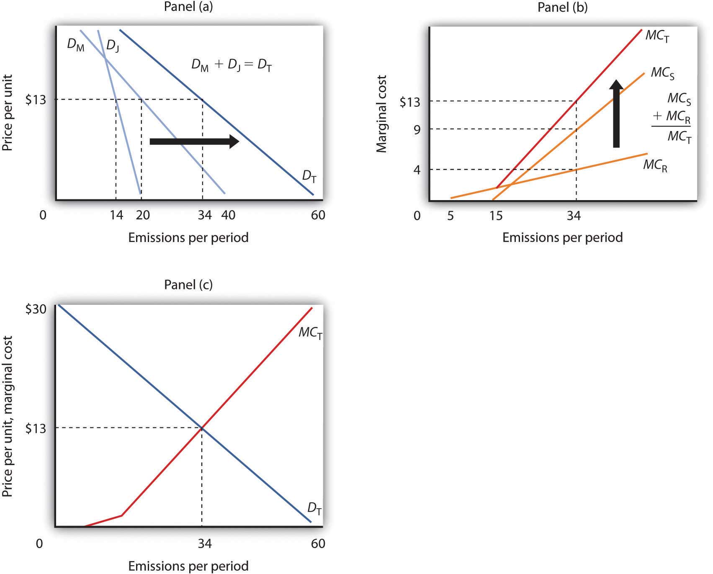
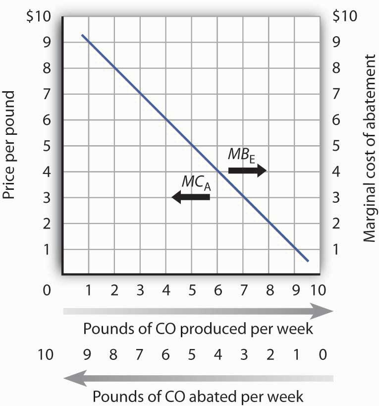
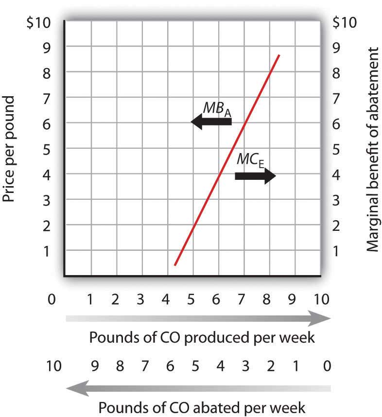
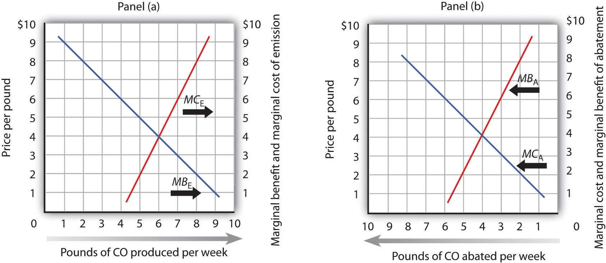
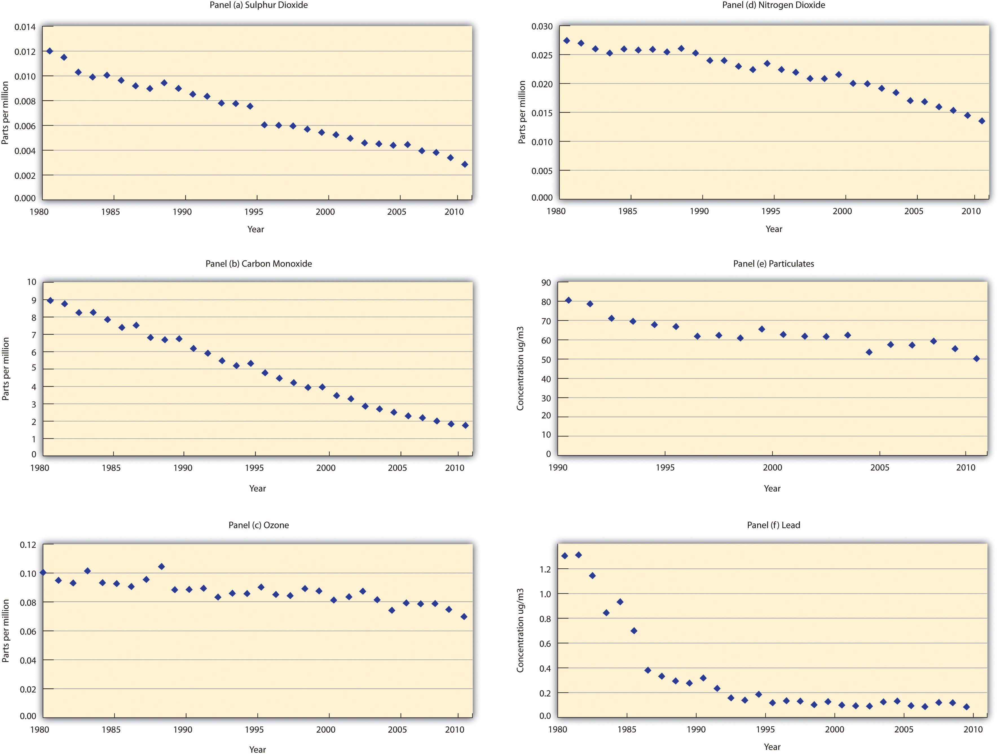

Emissions of carbon dioxide, a “greenhouse gas,” are limited by terms of the Kyoto Protocol, a treaty signed and ratified by most of the world’s nations. The treaty requires industrialized nations ratifying it to reduce their emissions of greenhouse gases such as carbon dioxide, which are thought to cause global warming, by 5.2% below their 1990 levels. The treaty also requires industrialized nations to assist developing nations with their efforts to reduce emissions of greenhouse gases. The vast majority of the world’s nations have ratified the accords. The United States is among a minority of nations that are not participating in them.
The Kyoto Protocol require that each industrialized nation specify quotas for each firm or organization that emits greenhouse gases. Those that emit less than their quotas can sell their unused rights to emit gases to other firms or organizations. Any agent that wishes to exceed its quota must purchase rights from someone else. That exchange permits organizations that can meet their quotas at relatively low cost to sell rights to others for which reductions would be costly. The exchanges still allow the overall target to be met, but at much lower cost. Such arrangements are known as “cap-and-trade” systems.
President Bill Clinton signed the Kyoto agreement, but it was not ratified by the United States Senate. President George W. Bush withdrew the United States from the agreement citing the damage to the economy that implementation would cause, the fact that rapidly industrializing economies, such as China and India, are excluded, and questions about the underlying science of global warming. Despite this, many firms and other organizations in the United States have already agreed to limit their emissions of greenhouse gases. For the more than 500 members (as of 2011) of the Chicago Climate Exchange (CCX), companies and organizations including IBM, the Ford Motor Company, Motorola, and the cities of Chicago and Oakland, the idea of exchanging rights to dump greenhouse gases in the atmosphere is already a reality.
Members of the CCX, formed in 2003 by Richard Sandor, a commodities entrepreneur and economist who helped establish markets in financial futures, have pledged to reduce their emissions of greenhouse gases to an annual target. If a member wishes to undertake a project that would generate additional carbon emissions, it purchases rights to the additional carbon from another member. In its first nine months of operation, CCX members traded rights to more than 1,000,000 tons of carbon. The CCX quotas are far less stringent than are those of the Kyoto accords. The chief importance of CCX is that it establishes a model for the exchange of emissions rights should the United States sign the treaty.Omid Sabbaghi and Navid Sabbaghi, “Carbon Financial Instruments, Thin Trading and Volatility: Evidence From the Chicago Climate Exchange,” Quarterly Review of Economics and Finance 51:4 (November 2011): 399–407; Richard L. Sandor, “The Chicago Climate Exchange,” China Business Review 31:1 (January/February 2008): 26.
The development of a market for pollution rights puts market forces to work in an effort to reduce the potential problem of global warming. The European Union introduced exchanges in rights to emit greenhouse gases and issued quotas to firms for carbon dioxide emissions in its 25 member nations in 2005. Anticipating the limits, firms began trading rights to emit carbon dioxide in 2004, when the European Climate Exchange was announced. The price of the right to dump a metric ton of greenhouse gases was about $20. By 2008, the price had risen to €29, and rights to emit 295 million tons were traded on the ECX in June of that year.ECX Market Update, June 2008 (available at europeanclimateexchange.com). In the purely voluntary Chicago Climate Exchange, rights were traded much more cheaply—for about $5 per metric ton.“A Green Future,” Economist, 372(8392) (September 11, 2004): 69–70; Jeffrey Ball, “New Market Shows Industry Moving on Global Warming,” The Wall Street Journal, 241(11) (January 16, 2003): A1; John J. Fialka, “Russian Interest in Signing Kyoto Spurs Trading,” The Wall Street Journal Online, June 1, 2004. The CCX has since formed a partnership with London’s International Petroleum Exchange and the European Climate Exchange, so that European firms can exchange carbon rights on an international basis.
In this chapter we shall put the analytical tools we have developed to work on the problems of the environment. We will begin with an examination of problems of air and water pollution. We will look also at alternative regulatory approaches to environmental problems. Direct controls, in which government agencies tell polluters what they must do to reduce pollution, remain the primary means of government regulation. Persuasion, seeking voluntary compliance with pollution reduction efforts, is also used. Two alternatives that economists advocate are taxes on pollutants and marketable pollution rights; such systems are gaining in importance.
Related issues include those of common property resources, those scarce resources for which no property rights are defined, and exhaustible natural resources, those resources whose stocks decline as they are used. These topics were discussed in the chapters on efficiency and natural resources, respectively.
We all pollute the environment. We do so not because we get some perverse satisfaction from polluting, but because activities that give us utility inevitably pollute. We do not drive our cars in order to dump carbon monoxide into the air but because we gain utility from the transportation and convenience cars provide. Firms pollute the environment if doing so allows them to produce goods and services at lower cost.
The benefits we derive from pollution are indirect. We obtain them from other activities that generate pollution. But that is not unusual—there are many things we do because of the other benefits they produce. Firms benefit from hiring labor not because their owners enjoy hiring workers but because those workers produce greater profits. We purchase electricity not because we enjoy the feeling of having the stuff racing through wires in the house but because the electricity produces light, heat, and other services more cheaply than would alternatives such as candles or fires. In purchasing this electricity, of course, we are demanding a good whose production inevitably degrades the environment. We pollute in the process of obtaining more of other goods and services we enjoy. We thus benefit from our pollution.
Of course, we suffer from the pollution we all generate as well. Smog-choked air damages our health and robs us of scenic views. We may not be able to fish or swim in polluted rivers. Just as the generation of pollution makes many of the activities we pursue less expensive, the fact that we have pollution increases many costs. Polluted rivers increase the cost of producing drinking water. Polluted air requires us to spend more on health care and to paint our buildings more often. Polluted soils produce less food.
Like any other activity, then, pollution has benefits as well as costs. The difficulty with pollution problems is that decision makers experience the benefits of their own choices to pollute the environment, but the costs spill over to everyone who breathes the air or consumes the water. These costs are examples of external costs. Recall that external costs produce one type of market failure and that market failures lead to inefficiency in the allocation of resources. The environment presents us with an allocation problem in which decision makers are not faced with all the benefits and costs of their choices. Environmental resources will not, in such cases, be allocated efficiently. Economists who examine and analyze environmental problems try to determine what an efficient allocation of the environment would most likely be—one that maximizes the difference between the total benefits and total costs of our pollution.
A second task of environmental economics is to find ways to get from where we are, typically with more pollution than is efficient, to the efficient solution. We have learned that private markets often fail to achieve efficient solutions to environmental problems because property rights are difficult to define and to exchange. We will see, however, that environmental economists have devised innovative ways to introduce property rights to environmental policy and to harness market forces to improve rather than degrade environmental quality.
PollutionSituation that exists when human activity produces a sufficient concentration of a substance in the environment to cause harm to people or to resources valued by people. exists whenever human activity generates a sufficient concentration of a substance in the environment to cause harm to people or to resources valued by people. Many potentially harmful substances are natural features of the environment, but they are not generally regarded as pollutants. Pollution is the product of people, not nature.
Pollution implies scarcity. If an activity emits harmful by-products into the environment, then the emission of the by-products is an alternative to some other activity. A scarcity problem exists at the point where harm occurs. A fire burning in a fireplace at a cabin in the forest whose smoke goes unnoticed does not suggest a scarcity problem. But when there are other people who will be harmed by the smoke, then one person’s enjoyment of the fire becomes an alternative to another person’s enjoyment of fresh air. Fresh air has become scarce, and pollution has become an economic problem.
Economists generally argue that pollution that harms plants or animals imposes a cost if the plants or animals are valued by people. When a farmer uses a pesticide that damages another farmer’s crop, for example, a pollution problem occurs. If an oil spill in the ocean damages sea animals that people care about, there is a pollution problem. It is, after all, people who make the choices that lead to pollution. It is people who can choose to limit their pollution. Economists therefore examine pollution problems from the perspective of the preferences of people.
The efficient level of pollution is the quantity at which its total benefits exceed its total costs by the greatest possible amount. This occurs where the marginal benefit of an additional unit of pollution equals its marginal cost.
Figure 18.1 "Determining the Efficient Level of Pollution" shows how we can determine an efficient quantity of pollution. Suppose two neighbors in a remote mountain area, Mary and Jane, burn fires in their cabins that generate air pollution that harms two other individuals, Sam and Richard, who live downwind. We shall assume that Mary and Jane are the only polluters and that Sam and Richard are the only people harmed by the pollution. We shall ignore, for example, the effect of Mary and Jane’s emissions on the possible problem of global warming.
Figure 18.1 Determining the Efficient Level of Pollution
Mary and Jane each benefit from polluting the environment by emitting smoke from their fires. In Panel (a), we see that Mary’s demand curve for emitting smoke is given by DM and that Jane’s demand curve is given by DJ. To determine the total demand curve, DT, we determine the amount that each person will emit at various prices. At a price of $13 per day, for example, Mary will emit 20 pounds per day. Jane will emit 14 pounds per day, for a total of 34 pounds per day on demand curve DT. Notice that if the price were $0 per unit, Mary would emit 40 pounds per day, Jane would emit 20, and emissions would total 60 pounds per day on curve DT. The marginal cost curve for pollution is determined in Panel (b) by taking the marginal cost curves for each person affected by the pollution. In this case, the only people affected are Sam and Richard. Sam’s marginal cost curve is MCS, and Richard’s marginal cost curve is MCR. Because Sam and Richard are each affected by the same pollution, we add their marginal cost curves vertically. For example, if the total quantity of the emissions is 34 pounds per day, the marginal cost of the 34th pound to Richard is $4, it is $9 to Sam, for a total marginal cost of the 34th unit of $13. In Panel (c), we put DT and MCT together to find the efficient solution. The two curves intersect at a level of emissions of 34 pounds per day, which occurs at a price of $13 per pound.
Suppose, as is often the case, that no mechanism exists to charge Mary and Jane for their emissions; they can pollute all they want and never have to compensate society (that is, pay Sam and Richard) for the damage they do. Alternatively, suppose there is no mechanism for Sam and Richard to pay Mary and Jane to get them to reduce their pollution. In either situation, the pollution generated by Mary and Jane imposes an external cost on Sam and Richard. Mary and Jane will pollute up to the point that the marginal benefit of additional pollution to them has reached zero—that is, up to the point where the marginal benefit matches their marginal cost. They ignore the external costs they impose on “society”—Sam and Richard.
Mary’s and Jane’s demand curves for pollution are shown in Panel (a). These demand curves, DM and DJ, show the quantities of emissions each generates at each possible price, assuming such a fee were assessed. At a price of $13 per unit, for example, Mary will emit 20 units of pollutant per period and Jane will emit 14. Total emissions at a price of $13 would be 34 units per period. If the price of emissions were zero, total emissions would be 60 units per period. Whatever the price they face, Mary and Jane will emit additional units of the pollutant up to the point that their marginal benefit equals that price. We can therefore interpret their demand curves as their marginal benefit curves for emissions. Their combined demand curve DT gives the marginal benefit to society (that is, to Mary and Jane) of pollution. Each person in our problem, Mary, Jane, Sam, and Richard, follows the marginal decision rule and thus attempts to maximize utility.
In Panel (b) we see how much Sam and Richard are harmed; the marginal cost curves, MCS and MCR, show their respective valuations of the harm imposed on them by each additional unit of emissions. Notice that over a limited range, some emissions generate no harm. At very low levels, neither Sam nor Richard is even aware of the emissions. Richard begins to experience harm as the quantity of emissions goes above 5 pounds per day; it is here that pollution begins to occur. As emissions increase, the additional harm each unit creates becomes larger and larger—the marginal cost curves are upward sloping. The first traces of pollution may be only a minor inconvenience, but as pollution goes up, the problems it creates become more serious—and its marginal cost rises.
Because the same emissions affect both Sam and Richard, we add their marginal cost curves vertically to obtain their combined marginal cost curve MCT. The 34th unit of emissions, for example, imposes an additional cost of $9 on Sam and $4 on Richard. It thus imposes a total marginal cost of $13.
The efficient quantity of emissions is found at the intersection of the demand (DT) and marginal cost (MCT) curves in Panel (c) of Figure 18.1 "Determining the Efficient Level of Pollution", with 34 units of the pollutant emitted. The marginal benefit of the 34th unit of emissions, as measured by the demand curve DT, equals its marginal cost, MCT, at that level. The quantity at which the marginal benefit curve intersects the marginal cost curve maximizes the net benefit of an activity.
We have already seen that in the absence of a mechanism to charge Mary and Jane for their emissions, they face a price of zero and would emit 60 units of pollutant per period. But that level of pollution is inefficient. Indeed, as long as the marginal cost of an additional unit of pollution exceeds its marginal benefit, as measured by the demand curve, there is too much pollution; the net benefit of emissions would be greater with a lower level of the activity.
Just as too much pollution is inefficient, so is too little. Suppose Mary and Jane are not allowed to pollute; emissions equal zero. We see in Panel (c) that the marginal benefit of dumping the first unit of pollution is quite high; the marginal cost it imposes on Sam and Richard is zero. Because the marginal benefit of additional pollution exceeds its marginal cost, the net benefit to society would be increased by increasing the level of pollution. That is true at any level of pollution below 34 units, the efficient solution.
The notion that too little pollution could be inefficient may strike you as strange. To see the logic of this idea, imagine that the pollutant involved is carbon monoxide, a pollutant emitted whenever combustion occurs, and it is deadly. It is, for example, emitted when you drive a car. Now suppose that no emissions of carbon monoxide are allowed. Among other things, this would require a ban on all driving. Surely the benefits of some driving would exceed the cost of the pollution created. The problem in pollution policy from an economic perspective is to find the quantity of pollution at which total benefits exceed total costs by the greatest possible amount—the solution at which marginal benefit equals marginal cost.
The problem of getting the efficient amount of pollution arises because no one owns the right to the air. If someone did, then that owner could decide how to use it. If a nonowner did not like the way the owner was using it, then he or she could try to pay the owner to change the way the air was being used.
In our earlier example, if Mary and Jane own the right to the air, but Sam and Richard do not like how much Mary and Jane are polluting it, Sam and Richard can offer to pay Mary and Jane to cut back on the amount they are polluting. Alternatively, if Sam and Richard own the air, then in order to pollute it, Mary and Jane would have to compensate the owners. Bargaining among the affected parties, if costless, would lead to the efficient amount of pollution. Costless bargaining requires that all parties know the source of the pollution and are able to measure the quantity emitted by each agent.
Specifically, suppose Mary and Jane own the right to dump pollutants into the air and had been emitting 60 units of the pollution per day. If Sam and Richard offer to pay them $13 for each unit of pollutant they cut back, Mary and Jane will reduce their pollution to 34 units, since the marginal benefit to them of the 35th to 60th unit is less than $13. Sam and Richard are better off since the marginal cost of those last 26 units of pollution is greater than $13 per unit. The efficient outcome of 34 units of pollution is thus achieved. Mary and Jane could reduce their emissions by burning their fires for less time, by selecting more efficient fireplaces, or by other measures. Many people, for example, have reduced their emissions by changing to gas-burning fireplaces rather than burning wood.
While the well-being of the affected parties is not independent of who owns the property right (each would be better off owning rather than not owning the right), the establishment of who owns the air leads to a solution that solves the externality problem and leads to an efficient market outcome. The proposition that if property rights are well defined and if bargaining is costless, the private market can achieve an efficient outcome regardless of which of the affected parties holds the property rights is known as the Coase theoremThe proposition that if property rights are well defined and if bargaining is costless, then the private market can achieve an efficient outcome regardless of which of the affected parties holds the property rights., named for the Nobel-Prize-winning economist Ronald Coase who generally is credited with this idea.
Suppose instead that Sam and Richard own the right to the air. They could charge Mary and Jane $13 per unit of pollution emitted. Mary and Jane would willingly pay for the right to emit 34 units of pollution, but not for any more, since beyond that amount the marginal benefit of each unit of pollution emitted is less than $13. Sam and Richard would willingly accept payments for 34 units of pollution at $13 each since the marginal cost to them for each of those units is less than $13.
In most cases, however, Coase stressed that the conditions for private parties to achieve an efficient outcome on their own are not present. Property rights may not be defined. Even if one party owns a right, enforcement may be difficult. Suppose Sam and Richard own the right to clean air but many people, not just two as in our example, contribute to polluting it. Would each producer that pollutes have to strike a deal with Sam and Richard? Could the government enforce all those deals? And what if there are many owners as well? Enforcement becomes increasingly difficult and striking deals becomes more and more costly. Finally, monitoring is extremely difficult in most environmental problems. While it is generally possible to detect the presence of pollutants, determining their source is virtually impossible. And determining who is harmed and by how much is a monumental undertaking in most pollution problems.
Nonetheless, it is the insight that the Coase theorem provides that has led economists to consider solutions to environmental problems that attempt to use the establishment of property rights and market mechanisms in various ways to bring about the efficient market outcome. Before considering alternative ways of controlling pollution, we look first at how the benefits and costs might be measured so that we have a better sense of what the efficient solution is.
Another insight that comes from Coase’s analysis is that the notion of “harm” is a reciprocal one. In our first example, it is tempting to conclude that Mary and Jane, by burning fires in their fireplaces, are “harming” Sam and Richard. But if Sam and Richard were not located downwind of the smoke, there would be no harm. In effect, Mr. Coase insists that the harm cannot be attributed to one party or another. Sam and Richard “cause” the harm by locating downwind of the fireplaces. While there is clearly harm in this situation, we could as easily attribute it to either the generators of the smoke or the recipients of the smoke. Before Coase wrote his article, “The Problem of Social Cost” in 1960, the general presumption was that decision makers such as Mary and Jane “cause” the harm and that they should be taxed for the costs they impose. Mr. Coase pointed out the alternative that Sam and Richard could avoid the harm by moving. Indeed, all sorts of alternative solutions come to mind even in this simple example. Mary and Jane could select types of wood that emit less smoke. They could use fireplaces that emit less smoke. They could make arrangements to time their burning to minimize the total amount of smoke that affects Sam and Richard. The goal, Coase said, is to select the most efficient from the alternatives available.R. H. Coase, “The Problem of Social Cost,” Journal of Law and Economics 3 (October 1960): 1–44.
Consider a different problem. Suppose that an airport has been built several miles outside the developed portion of a small city. No one lives close enough to the airport to be “harmed” by the noise inevitably generated by the operation of the airport. As time passes, people are likely to build houses near the airport to take advantage of jobs at the airport or to gain easy access to it. Those people will now be “harmed” by noise from the airport. But what is the cause of this harm? By definition, there was no “harm” before people started living close to the airport. True, it is the airport that generates the noise. But the noise causes harm only because people now live near it. Just as Mary and Jane’s campfires only generate “harm” if someone is downwind of the smoke, the noise from the airport causes damage only if someone lives near the airport. The problem of the noise could be mitigated in several ways. First, people could have chosen not to live near the airport. Once they have chosen to live near the airport, they could reduce the noise with better insulation or with better windows. Alternatively, the airport management could choose different flight patterns to reduce noise that affects neighboring homeowners. It is always the case that there are several potential ways of mitigating the effects of airport operations; the economic problem is to select the most efficient from among those alternatives.
Saying that the efficient level of pollution occurs at a certain rate of emissions, as we have done so far, is one thing. Determining the actual positions of the demand and marginal cost curves that define that efficient solution is quite another. Economists have devised a variety of methods for measuring these curves.
A demand curve for emitting pollutants shows the quantity of emissions demanded per unit of time at each price. It can, as we have seen, be taken as a marginal benefit curve for emitting pollutants.
The general approach to estimating demand curves involves observing quantities demanded at various prices, together with the values of other determinants of demand. In most pollution problems, however, the price charged for emitting pollutants has always been zero—we simply do not know how the quantity of emissions demanded will vary with price.
One approach to estimating the demand curve for pollution utilizes the fact that this demand occurs because pollution makes other activities cheaper. If we know how much the emission of one more unit of a pollutant saves, then we can infer how much consumers or firms would pay to dump it.
Suppose, for example, that there is no program to control automobile emissions—motorists face a price of zero for each unit of pollution their cars emit. Suppose that a particular motorist’s car emits an average of 10 pounds of carbon monoxide per week. Its owner could reduce emissions to 9 pounds per week at a cost of $1 per week. This $1 is the marginal cost of reducing emissions from 10 to 9 pounds per week. It is also the maximum price the motorist would pay to increase emissions from 9 to 10 pounds per week—it is the marginal benefit of the 10th pound of pollution. We say that it is the maximum price because if asked to pay more, the motorist would choose to reduce emissions at a cost of $1 instead.
Now suppose that emissions have been reduced to 9 pounds per week and that the motorist could reduce them to 8 at an additional cost of $2 per week. The marginal cost of reducing emissions from 9 to 8 pounds per week is $2. Alternatively, this is the maximum price the motorist would be willing to pay to increase emissions to 9 from 8 pounds; it is the marginal benefit of the 9th pound of pollution. Again, if asked to pay more than $2, the motorist would choose to reduce emissions to 8 pounds per week instead.
Figure 18.2 Abatement Costs and Demand
A car emits an average of 10 pounds of CO per week when no restrictions are imposed—when the price of emissions is zero. The marginal cost of abatement (MCA) is the cost of eliminating a unit of emissions; this is the interpretation of the curve when read from right to left. The same curve can be read from left to right as the marginal benefit of emissions (MBE).
We can thus think of the marginal benefit of an additional unit of pollution as the added cost of not emitting it. It is the saving a polluter enjoys by dumping additional pollution rather than paying the cost of preventing its emission. Figure 18.2 "Abatement Costs and Demand" shows this dual interpretation of cost and benefit. Initially, our motorist emits 10 pounds of carbon monoxide per week. Reading from right to left, the curve measures the marginal costs of pollution abatement (MCA). We see that the marginal cost of abatement rises as emissions are reduced. That makes sense; the first reductions in emissions will be achieved through relatively simple measures such as modifying one’s driving technique to minimize emissions (such as accelerating more slowly), or getting tune-ups more often. Further reductions, however, might require burning more expensive fuels or installing more expensive pollution-control equipment.
Read from left to right, the curve in Figure 18.2 "Abatement Costs and Demand" shows the marginal benefit of additional emissions (MBE). Its negative slope suggests that the first units of pollution emitted have very high marginal benefits, because the cost of not emitting them would be very high. As more of a pollutant is emitted, however, its marginal benefit falls—the cost of preventing these units of pollution becomes quite low.
Economists have also measured demand curves for emissions by using surveys in which polluters are asked to report the costs to them of reducing their emissions. In cases in which polluters are charged for the emissions they create, the marginal benefit curve can be observed directly.
As we saw in Figure 18.1 "Determining the Efficient Level of Pollution", the marginal benefit curves of individual polluters are added horizontally to obtain a market demand curve for pollution. This curve measures the additional benefit to society of each additional unit of pollution.
Pollutants harm people and the resources they value. The marginal cost curve for a pollutant shows the additional cost imposed by each unit of the pollutant. As we saw in Figure 18.1 "Determining the Efficient Level of Pollution", the marginal cost curves for all the individuals harmed by a particular pollutant are added vertically to obtain the marginal cost curve for the pollutant.
Like the marginal benefit curve for emissions, the marginal cost curve can be interpreted in two ways, as suggested in Figure 18.3 "The Marginal Cost of Emissions and the Marginal Benefit of Abatement". When read from left to right, the curve measures the marginal cost of additional units of emissions (MCE). If increasing the motorists’ emissions from four pounds of carbon monoxide per week to five pounds of carbon monoxide per week imposes an external cost of $2, though, the marginal benefit of not being exposed to that unit of pollutant must be $2. The marginal cost curve can thus be read from right to left as a marginal benefit curve for abating emissions (MBA). This marginal benefit curve is, in effect, the demand curve for cleaner air.
Figure 18.3 The Marginal Cost of Emissions and the Marginal Benefit of Abatement
The marginal cost of the first few units of emissions is zero and then rises once emissions begin to harm people. That is the point at which the air becomes a scarce resource. Read from left to right the curve gives the marginal cost of emissions (MCE). Read from right to left, the curve gives the marginal benefit of abatement (MBA).
Economists estimate the marginal cost curve of pollution in several ways. One is to infer it from the demand for goods for which environmental quality is a complement. Another is to survey people, asking them what pollution costs—or what they would pay to reduce it. Still another is to determine the costs of damages created by pollution directly.
For example, environmental quality is a complement of housing. The demand for houses in areas with cleaner air is greater than the demand for houses in areas that are more polluted. By observing the relationship between house prices and air quality, economists can learn the value people place on cleaner air—and thus the cost of dirtier air. Studies have been conducted in cities all over the world to determine the relationship between air quality and house prices so that a measure of the demand for cleaner air can be made. They show that increased pollution levels result in lower house values.See, for example, Nir Becker and Doron Lavee, “The Benefits and Costs of Noise Reduction,” Journal of Environmental Planning and Management, 46:1 (January 2003): 97–111, which shows the negative relationship between apartment prices and noise levels (a form of pollution) in Israel.
Surveys are also used to assess the marginal cost of emissions. The fact that the marginal cost of an additional unit of emissions is the marginal benefit of avoiding the emissions suggests that surveys can be designed in two ways. Respondents can be asked how much they would be harmed by an increase in emissions, or they can be asked what they would pay for a reduction in emissions. Economists often use both kinds of questions in surveys designed to determine marginal costs.
A third kind of cost estimate is based on objects damaged by pollution. Increases in pollution, for example, require buildings to be painted more often; the increased cost of painting is one measure of the cost of added pollution.
While all of the attempts to measure cost are imperfect, the alternative is to not try to quantify cost at all. To economists, such an ostrich-like approach of sticking one’s head in the sand would be unacceptable.
Whether economists measure the marginal benefits and marginal costs of emissions or, alternatively, the marginal benefits and marginal costs of abatement, the policy implications are the same from an economic perspective. As shown in Panel (a) of Figure 18.4 "The Efficient Level of Emissions and Pollution Abatement", applying the marginal decision rule in the case of emissions suggests that the efficient level of pollution occurs at six pounds of CO emitted per week. At any lower level, the marginal benefits of the pollution would outweigh the marginal costs. At a higher level, the marginal costs of the pollution would outweigh the marginal benefits.
Figure 18.4 The Efficient Level of Emissions and Pollution Abatement
In Panel (a) we combine the marginal benefit of emissions (MBE) with the marginal cost of emissions (MCE). The efficient solution occurs at the intersection of the two curves. Here, the efficient quantity of emissions is six pounds of CO per week. In Panel (b), we have the same curves read from right to left. The marginal cost curve for emissions becomes the marginal benefit of abatement (MBA). The marginal benefit curve for emissions becomes the marginal cost of abatement (MCA). With no abatement program, emissions total ten pounds of CO per week. The efficient degree of abatement is to reduce emissions by four pounds of CO per week to six pounds per week.
As shown in Panel (b) of Figure 18.4 "The Efficient Level of Emissions and Pollution Abatement", application of the marginal decision rule suggests that the efficient level of abatement effort is to reduce pollution by 4 pounds of CO produced per week. That is, reduce the level of pollution from the 10 pounds per week that would occur at a zero price to 6 pounds per week. For any greater effort at abating the pollution, the marginal cost of the abatement efforts would exceed the marginal benefit.
The table shows the marginal benefit to a paper mill of polluting a river and the marginal cost to residents who live downstream. In this problem assume that the marginal benefits and marginal costs are measured at (not between) the specific quantities shown.
Plot the marginal benefit and marginal cost curves. What is the efficient quantity of pollution? Explain why neither one ton nor five tons is an efficient quantity of pollution. In the absence of pollution fees or taxes, how many units of pollution do you expect the paper mill will choose to produce? Why?
|
Quantity of pollution (tons per week) |
Marginal benefit | Marginal cost |
|---|---|---|
| 0 | $110 | $0 |
| 1 | 100 | 8 |
| 2 | 90 | 20 |
| 3 | 80 | 35 |
| 4 | 70 | 70 |
| 5 | 60 | 150 |
| 6 | 0 | 300 |
How do economists estimate demand curves for environmental quality? One recent example comes from work by Louisiana State University economist David M. Brasington and Auburn University economist Diane Hite. Using data from Ohio’s six major metropolitan areas (Akron, Cincinnati, Cleveland, Columbus, Dayton, and Toledo), the economists studied the relationship between house prices and the distance between individual houses and hazardous waste sites. From this, they were able to estimate the demand curve for environmental quality—at least in terms of the demand for locations farther from environmental hazards.
The economists used actual real estate transactions in 1991 to get data on house prices. In that year, there were 1,192 hazardous sites in the six metropolitan areas. The study was based on 44,255 houses. The median distance between a house and a hazardous site was 1.08 miles. The two economists found, as one would expect, that house prices were higher the greater the distance between the house and a hazardous site. All other variables unchanged, increasing the distance from a house to a hazardous site by 10% increased house value by 0.3%.
Other characteristics of the demand curve shed light on the relationship between environmental quality and other goods. For example, the study showed that people substitute house size for environmental quality. A house closer to a hazardous waste site is cheaper; people take advantage of the lower price of such sites to purchase larger houses.
While house size and environmental quality were substitutes, school quality, measured by student scores on achievement tests, was a complement. If the price of school quality were to fall by 10%, household would buy 8% more environmental quality. The cross-price elasticity between environmental quality and school quality was thus estimated to be −0.80.
There is no marketplace for environmental quality. Estimating the demand curve for such quality requires economists to examine other data to try to infer what the demand curve is. The study by Professors Brasington and Hite illustrates the use of an examination of an actual market, the market for houses, to determine characteristics of the demand curve for environmental quality.
Source: David M. Brasington and Diane Hite, “Demand for Environmental Quality: A Spatial Hedonic Analysis,” Regional Science & Urban Economics, 35(1) (January 2005): 57–82.
The efficient quantity of pollution is four tons per week. At one ton of pollution, the marginal benefit exceeds the marginal cost. If the paper mill expands production, the additional pollution generated leads to additional benefits for it that are greater than the additional cost to the residents nearby. At five tons, the marginal cost of polluting exceeds the marginal benefit. Reducing production, and hence pollution, brings the marginal costs and benefits closer.
In the absence of any fees, taxes, or other charges for its pollution, the paper mill will likely choose to generate six tons per week, where the marginal benefit has fallen to zero.
Suppose that the goal of public policy is to reduce the level of emissions. Three types of policy alternatives could be applied. The first is persuasion—people can be exhorted to reduce their emissions. The second relies on direct controls, and the third uses incentives to induce reductions in emissions.
Back in the days when preventing forest fires was a goal of public policy, a cartoon character called Smokey the Bear once asked us to be careful with fire. Signs everywhere remind us not to litter. Some communities have mounted campaigns that admonish us to “Give a hoot—don’t pollute.”
These efforts to influence our choices are examples of moral suasionAn effort to change people’s behavior by appealing to their sense of moral values., an effort to change people’s behavior by appealing to their sense of moral values. Moral suasion is widely used as a tactic in attempting to reduce pollution. It has, for example, been fairly successful in campaigns against littering, which can be considered a kind of pollution. Efforts at moral suasion are not generally successful in reducing activities that pollute the air and water. Pleas that people refrain from driving on certain days when pollution is very great, for example, achieve virtually no compliance.
Moral suasion appears to be most effective in altering behaviors that are not already widespread and for which the cost of compliance is low. It is easy to be careful with one’s fires or to avoid littering.
Moral suasion does not, however, appear to lead to significant changes in behavior when compliance costs are high or when the activity is already widely practiced. It is therefore not likely to be an effective tool for reducing most forms of pollution.
In the most widely used regulatory approach to environmental pollution, a government agency tells a polluting agent how much pollution it can emit or requires the agent to use a particular production method aimed at reducing emissions. This method, in which the government agency tells a firm or individual how much or by what method emissions must be adjusted, is called the command-and-control-approachApproach in which a government agency specifies how much or by what method a polluting agent must adjust its emissions..
Economists are generally critical of the command-and-control approach for two reasons. First, it achieves a given level of emissions reduction at a higher cost than what would be required to achieve that amount of reduction if market incentives (discussed below) were implemented. Second, it gives polluters no incentive to explore technological and other changes that might reduce the demand for emissions.
Suppose two firms, A and B, each dump 500 tons of a certain pollutant per month and that there is no fee imposed (that is, the price for their emissions equals zero). Total emissions for the two firms thus equal 1,000 tons per month. The pollution control authority decides to cut this in half and orders each firm to reduce its emissions to 250 tons per month, for a total reduction of 500 tons. This is a command-and-control regulation because it specifies the amount of reduction each firm must make. Although it may seem fair to require equal reductions by the two firms, this approach is likely to generate excessive costs.
Suppose that Firm A is quite old and that the reduction in emissions to 250 tons per period would be extremely costly. Suppose that removing the 251st ton costs this firm $1,000 per month. Put another way, the marginal benefit to Firm A of emitting the 251st ton would be $1,000.
Suppose Firm B, a much newer firm, already has some pollution-control equipment in place. Reducing its emissions to 250 tons imposes a cost, but a much lower cost than to Firm A. Indeed, suppose Firm B could reduce its emissions to 249 tons at an additional cost of $100; the marginal benefit to Firm B of emitting the 249th ton is $100.
If two firms have different marginal benefits of emissions, the allocation of resources is inefficient. The same level of emissions could be achieved at a lower cost. Suppose, for example, Firm A is permitted to increase its emissions to 251 tons while Firm B reduces emissions to 249. Firm A saves $1,000, while the cost to Firm B is just $100. Society achieves a net gain of $900, and the level of emissions remains at 500 tons per month.
As long as Firm A’s marginal benefit of emissions exceeds Firm B’s, a saving is realized by shifting emissions from B to A. At the point at which their marginal benefits are equal, no further reduction in the cost of achieving a given level of emissions is possible, and the allocation of emissions is efficient. When a given reduction in emissions is achieved so that the marginal benefit of an additional unit of emissions is the same for all polluters, it is a least-cost reduction in emissionsSituation in which emissions are reduced so that the marginal benefit of an additional unit of pollution is the same for all polluters.. A command-and-control approach is unlikely to achieve a least-cost reduction in emissions.
The inefficiency of command-and-control regulation is important for two reasons. First, of course, it wastes scarce resources. If the same level of air or water quality could be achieved at a far lower cost, then surely it makes sense to use the cheaper method. Perhaps even more significant, reliance on command-and-control regulation makes environmental quality far more expensive than it needs to be—and that is likely to result in an unwillingness to achieve the improvements that would be economically efficient.
There is a further difficulty with the command-and-control approach. Once firms A and B have been told to reduce their emissions to 250 tons per period, neither firm has an incentive to try to do better. Neither firm will engage in research seeking to reduce its emissions below 250 tons.
Another way to see the difficulty with command-and-control approaches to pollution control is to imagine that a similar method were in use for other resource allocation problems. Suppose, for example, that labor were allocated according to a command-and-control mechanism. Rather than leaving labor allocation to the marketplace, suppose that firms were simply told how much labor to use. Such a system would clearly be unworkable.
Markets allocate resources efficiently when the price system confronts decision makers with the costs and benefits of their decisions. Prices create incentives—they give producers an incentive to produce more and consumers an incentive to economize. Regulatory efforts that seek to create market-like incentives to encourage reductions in pollution, but that allow individual decision makers to determine how much to pollute, are called incentive approachesApproaches to pollution regulation that create market-like incentives to encourage reductions in pollution but allow individual decision makers to decide how much to pollute..
One incentive approach to pollution control relies on taxes. If a tax is imposed on each unit of emissions, polluters will reduce their emissions until the marginal benefit of emissions equals the tax, and a least-cost reduction in emissions is achieved.
Emissions taxes are widely used in Europe. France, for example, has enacted taxes on the sulfur dioxide and nitrous oxide emissions of power plants and other industrial firms. Spain has imposed taxes on the dumping of pollutants into the country’s waterways. Emissions taxes have long been imposed on firms that dump pollutants into some river systems in Europe.
Emissions taxes are also being used in economies making the transition from socialism to a market system. In China, taxes are used to limit the emission by firms of water pollutants. By law, 80% of the money collected from these taxes goes back to the firms themselves for emissions control projects. The tax in China is a rudimentary one. The level of a firm’s emissions is determined by visual inspection of the water just downstream from the point at which the firm emits pollutants. Taxes are imposed based on a guess as to how much the firm has emitted. A similar approach is used in China to limit emissions of particulate matter, an important air pollutant. While the method appears primitive, it is nevertheless successful. During the 1990s, China had the fastest growing economy in the world. Total economic activity increased in China at an annual rate of about 10% per year. Despite this phenomenal increase in economic activity, international estimates of China’s emissions of particulates suggest that they were down 50% during the decade. China’s emissions of effluents were unchanged during this period of phenomenal growth.
Taxes are also used to limit pollution in the countries of the former Soviet Union. Rather than basing taxes on an estimate of marginal cost, taxes are set according to complicated engineering formulae. In Lithuania, for example, the tax on sulfide emissions in the water has been set at several million dollars per ton. Needless to say, that tax is not even collected.
The important role of pollution taxes in improving environmental quality is often misunderstood. For example, an intriguing battle in the courts followed Argentina’s attempt to use taxes to control air pollution. Environmental groups went to federal court, charging that the taxes constituted a “license to pollute.” The unfortunate result was that the Argentine government withdrew its effort to control pollution through taxation without finding an adequate substitute policy.The observations on pollution taxes in China, Argentina, and Lithuania are from Randall A. Bluffstone, “Environmental Taxes in Developing and Transition Economies,” Public Finance & Management 3:1 (Spring, 2003): 143–75.
An emissions tax requires, of course, that a polluter’s emissions be monitored. The polluter is then charged a tax equal to the tax per unit times the quantity of emissions. The tax clearly gives the polluter an incentive to reduce emissions. It also ensures that reductions will be accomplished by those polluters that can achieve them at the lowest cost. Polluters for whom reductions are most costly will generally find it cheaper to pay the emissions tax.
In cases where it is difficult to monitor emissions, a tax could be imposed indirectly. Consider, for example, farmers’ use of fertilizers and pesticides. Rain may wash some of these materials into local rivers, polluting the water. Clearly, it would be virtually impossible to monitor this runoff and assess responsible farmers a charge for their emissions. But it would be possible to levy a tax on these materials when they are sold, confronting farmers with a rough measure of the cost of the pollution their use of these materials imposes.
An alternative to emissions taxes is marketable pollution permits, which allow their owners to emit a certain quantity of pollution during a particular period. The introduction to this chapter dealt with an example of marketable pollution permits; each of the permits to dump a metric ton of greenhouse gases that is purchased results in a reduction in the cost of meeting the goal of reducing the emissions of these gases.
To see how this works, suppose that Firms A and B are again told that they must reduce their emissions to 250 tons of a pollutant per month. This time, however, they are given 250 permits each—one permit allows the emission of one ton per month. They can trade their permits; a firm that emits less than its allotted 250 tons can sell some of its permits to another firm that wants to emit more.
We saw that Firm B can reduce its emissions below 250 tons for a much lower cost than Firm A. For example, it could reduce its emissions to 249 tons for $100. Firm A would be willing to pay $1,000 for the right to emit the 251st ton of emissions. Clearly, a mutually profitable exchange is possible. In fact, as long as their marginal benefits of pollution differ, the firms can profit from exchange. Equilibrium will be achieved at the least-cost solution at which the marginal benefits for both firms are equal.
One virtue of using marketable permits is that this approach represents only a modest departure from traditional command-and-control regulation. Once a polluter has been told to reduce its emissions to a certain quantity, it has a right to emit that quantity. Polluters will exchange rights only if doing so increases their utility or profits—allowing rights to be exchanged can only make them better off. Another benefit, of course, is that such exchanges allow a shift from the inefficient allocation created by command-and-control regulation to an efficient allocation in which pollution is reduced at the lowest possible cost. Finally, each firm will have an incentive to explore ways to reduce its emissions further, either to be able to sell more rights or to require purchasing fewer permits.
Incentive systems, either emissions taxes or tradable permits, can achieve reductions in emissions at a far lower cost than command-and-control regulation. Even more important, however, are the long-run incentives they create for technological change. A firm that is ordered to reduce its emissions to a certain level has no incentive to do better, whereas a firm facing an emissions tax has a constant incentive to seek out new ways to lower its emissions and thus lower its taxes. Similarly, a firm faces a cost for using an emissions permit—the price that could be obtained from selling the permit—so it will seek ways to reduce emissions. As firms discover new ways to lower their costs of reducing emissions, the demand for emissions permits will fall, lowering the efficient quantity of emissions—and improving environmental quality even further.
Federal efforts to control air and water pollution in the United States have produced mixed results. Air quality has generally improved; water quality has improved in some respects but deteriorated in others.
Figure 18.5 "U.S. Air Pollution Levels, 1980–2009" shows how annual average concentrations of airborne pollutants in major U.S. cities have declined since 1980. Lead concentrations have dropped most dramatically, largely because of the increased use of unleaded gasoline.
Figure 18.5 U.S. Air Pollution Levels, 1980–2009
The average concentration of major air pollutants in U.S. cities has declined since 1975.
Source: U.S. Environmental Protection Agency, Air Trends, available at http://www.epa.gov/air/airtrends/index.html.
Public policy has generally stressed command-and-control approaches to air and water pollution. To reduce air pollution, the EPA sets air quality standards that regions must achieve, then tells polluters what adjustments they must make in order to meet the standards. For water pollution, the Environmental Protection Agency (EPA) has set emissions limits based on the technologies it considers reasonable to require of polluters. If the implementation of a particular technology will reduce a polluter’s emissions by 20%, for example, the EPA will require a 20% reduction in emissions. National standards have been imposed; no effort has been made to consider the benefits and costs of pollution in individual streams. Further, the EPA’s technology-based approach pays little attention to actual water quality—and has produced few gains.
Moreover, environmental problems go beyond national borders. For example, sulfur dioxide emitted from plants in the United States can result in acid rain in Canada and elsewhere. Another possible pollution problem that extends across national borders is suggested by the global warming hypothesis.
Many scientists have argued that increasing emissions of greenhouse gases, caused partly by the burning of fossil fuels, trap ever more of the sun’s energy and make the planet warmer. Global warming, they argue, could lead to flooding of coastal areas, losses in agricultural production, and the elimination of many species. If this global warming hypothesis is correct, then carbon dioxide is a pollutant with global implications, one that calls for a global solution.
At the 1997 United Nations conference in Kyoto, Japan, the industrialized countries agreed to cuts in carbon dioxide emissions of 5.2% below the 1990 level by 2010. At the 1998 conference in Buenos Aires, Argentina, 170 countries agreed on a two-year action plan for designing mechanisms to reduce emissions and procedures to encourage transfers of new energy technologies to developing countries.
While the delegates to the conferences sign the various protocols, countries are not bound by them until ratified by appropriate governmental bodies. By 2005, the vast majority of the world’s nations had ratified the agreement. The United States had neither signed nor ratified the agreement.
Debates at these conferences have been over the extent to which developing countries should be required to reduce their emissions and over the role that market mechanisms should play. Developing countries argue that their share in total emissions is fairly small and that it is unfair to ask them to give up economic growth, given their lower income levels. As for how emissions reductions will be achieved, the United States has been the strongest advocate for emissions trading in which each country would receive a certain number of tradable emissions rights. This provision has been incorporated in the agreement.
That market approaches have entered the national and international debates on dealing with environmental issues, and to a large extent have even been used, demonstrates the power of economic analysis. Economists have long argued that as pollution-control authorities replace command-and-control strategies with incentive approaches, society will reap huge savings. The economic argument has rested on acknowledging the opportunity costs of addressing environmental concerns and thus has advocated policies that achieve improvements in the environment in the least costly ways.
Based on your answer to the previous Try It! problem, a tax of what amount would result in the efficient quantity of pollution?
The urban highways of virtually every city in the world are heavily congested in what is fancifully referred to as the “rush hour.” Traffic during this period hardly rushes. The problem of traffic congestion is analogous to the problem of pollution, and it lends itself to the same solution.
Suppose that you are driving into any major city on a weekday at eight o’clock in the morning. The highway is congested when you drive onto it. Your car adds to that congestion. You, of course, experience the average level of congestion. But, your car slows every car behind you on the highway by a small amount. Multiplying that extra slowing by the number of cars behind you gives the marginal delay of adding your own car to an already congested highway. That marginal cost is many times greater than the average cost that you actually face. The result is an inefficient solution in which roads are congested far beyond the point that would be economically efficient. The late William Vickrey, who won the Nobel Prize for his work in the economics of public finance, advocated a system of road pricing that would put an end to congested highways.
Mr. Vickrey’s dream is a reality in Singapore. The island-nation’s 700,000 cars are each required to subscribe to the Electronic Road Pricing (ERP) system and to have an ERP card on their windshield. Further, each driver is required to maintain a deposit of electronic cash in the card. Tolls are charged during rush hour for the highways leading into the downtown area. There is also a charge for using downtown streets. Tolls range from $0.50 to $1.00 and are only levied if the road threatens to become congested. Using highways and streets is free at other times. ERP managers adjust the tolls to avoid “jam-ups,” as they are called in Singapore. Managers attempt to keep traffic flowing at 30 to 40 mph on the highways and 15 to 20 mph on downtown streets.
When a car passes an electronic gurney, it automatically takes the charge out of the ERP card on the windshield. When a charge is taken from the card, the driver hears a beep. If the card balance falls below $5, several beeps are heard. The cards can be placed in ATMs to put additional funds in them. A car that does not have enough money in its card is photographed and the owner of the car receives a $45 citation in the mail. The tolls keep casual drivers off the roads during rush hour. Commuters generally find it cheaper to use the island’s excellent rapid transit system.
The system is not universally popular. People in Singapore refer to the system as “Eternally Raising Prices.” The manager of the system, Hiok Seng Tan, rejects the criticism. “It’s not just a system to get more money of Singaporeans,” he told the Boston Globe. In fact, the system takes in only $44 million per year; the money is used to maintain the system.
Singapore’s system is an example of a price system to manage what is, in effect, a pollution problem. It appears to be effective. Jam-ups are uncommon. Would such a system work in other areas? The idea is not politically popular. Gregory B. Christainsen, a professor of economics at California State University at East Bay, notes that Singapore is dominated by a single party and questions whether other urban areas are ready for the approach. Still, the system works and the concept is one more urban areas should consider.
Sources: Alex Beam, “Where Traffic Has Been Tamed,” Boston Globe, (May 2, 2004): M-7; Gregory B. Christainsen, “Road Pricing in Singapore after 30 Years,” Cato Journal, 26(1) (Winter 2006): 71–88.
The paper mill will reduce its pollution until the marginal benefit of polluting equals the tax. In this case a tax of $70 would cause the paper mill to reduce its pollution to 4 tons, the efficient level. At pollution levels below that amount, the marginal benefit of polluting exceeds the tax, and so the paper mill is better off polluting and paying the tax. At pollution levels greater than that amount, the marginal benefit of polluting is less than the tax.
Pollution is a by-product of human activity. It occurs when the environment becomes scarce—when dumping garbage imposes a cost. There are benefits as well as costs to pollution; the efficient quantity of pollution occurs where the difference between total benefits and total costs is maximized. This solution is achieved where the marginal benefit of additional pollution equals the marginal cost. We have seen that an alternative approach shows that efficiency is also achieved where the marginal benefit of pollution abatement equals the marginal cost of abatement.
Economists measure the benefits of pollution in terms of the costs of not dumping the pollution. The same curve can be read from left to right as the marginal benefit curve for emissions and from right to left as the marginal cost curve for abatement.
The costs of pollution are measured in two ways. One is through direct surveys. Respondents can be asked how much compensation they would be willing to accept in exchange for a reduction in environmental pollution; alternatively, they can be asked how much they would pay for an improvement in environmental quality. A second approach infers the marginal cost of increased pollution from other relationships. The effects of pollution on house prices or rental values, for example, allow economists to estimate the value people place on environmental quality. Pollution costs can also be estimated on the basis of the costs they impose on firms in production.
Three types of policies are available to reduce pollution. Moral suasion is sometimes used, but it is effective only under limited conditions. Command-and-control regulation is used most commonly, but it is likely to be inefficient. It also fails to provide incentives for technological change in the long run. The most promising policies are the incentive approaches, which include emissions taxes and marketable pollution permits. Both can be designed to reduce emissions at the lowest cost possible, and both create an incentive for firms to search out new and cheaper ways to reduce emissions.
Although public policy has stressed command-and-control methods in the past, pollution rights exchanges are now being introduced. Past policies may have been inefficient, but they have succeeded in improving air quality, at least in the nation’s cities.
Suppose the dry-cleaning industry is perfectly competitive. The process of dry cleaning generates emissions that pollute the air, and firms now emit this pollution at no cost. Suppose that the long run equilibrium price for dry cleaning a typical item is $5, and a pollution-control program increases the marginal cost by $1 per item.
Now suppose the dry-cleaning industry in the community is monopolistically competitive. Suppose the initial price per unit of dry-cleaning is $6. Suppose that a charge levied on dry-cleaning firms for the pollution they generate increases the cost of a unit of dry-cleaning by $1.
Suppose local government regulations allow only a single firm to provide dry-cleaning services to a local community, and this firm generates pollution as in Problem 1. The firm initially charges a price of $4 per item. Now a pollution-control program is imposed, increasing the firm’s marginal and average total costs by $1 per item.
Suppose the marginal benefit (MB) and marginal cost (MC) curves for emitting particulate matter are given by the following schedules, where E is the quantity of emissions per period. The marginal benefits and costs are measured at the quantities of emissions shown.
| E/period | MB | MC |
|---|---|---|
| 0 | $230 | $0 |
| 200 | 190 | 10 |
| 400 | 150 | 30 |
| 600 | 110 | 50 |
| 800 | 70 | 70 |
| 1,000 | 30 | 90 |
Now suppose that rising incomes increase marginal cost as follows:
| E/period | New MC |
|---|---|
| 0 | $0 |
| 200 | 30 |
| 400 | 70 |
| 600 | 110 |
| 800 | 150 |
| 1,000 | 190 |